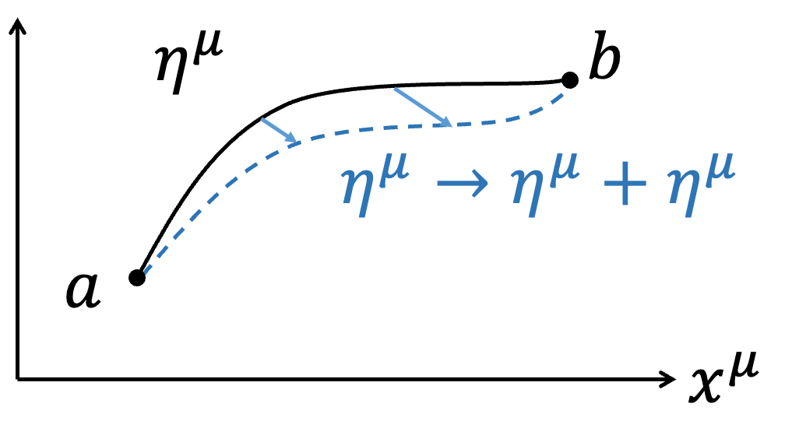

超導量子電腦-硬體技術與廠商指引(2025)
In the relativistic case, to describe a free particle, we use the 4-displacement $$\eta =\eta ^\mu \hat{e} _\mu =( au ,\overrightarrow{0} )_{porper}=(t,\overrightarrow{\eta})$$ to describe the trajectory of the particle, where \( au\) is the particle's proper time. Here, \(\eta ^\mu\) is used to distinguish the trajectory from spacetime (to accommodate subsequent discussions on Noether's theorem, it is necessary to rigorously distinguish between the trajectory and spacetime; the trajectory is a physical quantity, while spacetime is a coordinate system, which are different concepts). To describe the particle's velocity, we use the 4-Velocity \(U=U^\mu \hat{e} _\mu =(\gamma c,\gamma \overrightarrow{v} )={d\eta ^\mu \over d au} \hat{e} _\mu\), where \( au\) is the particle's proper time. Furthermore, \(U^\mu =U^\mu (x^ u )\), meaning that the velocity \(U^\mu\) changes with different coordinates \(x^ u\) in spacetime. The idea here is that a free particle moves from point a to point b in spacetime, and we calculate the extremum of the Action \(S_P\) for different paths \(\eta ^\mu\) by varying \(x^\mu\):  $$\eta ^\mu o \eta ^\mu +\delta \eta ^\mu $$ $$\delta \eta ^\mu (a)=\delta \eta ^\mu (b)=0$$ The Action \(S_P\) for a free particle is: $$S_P=\int _a^b -mc^2 d au $$ After variation: $$\delta S_P=\delta \int _a^b -mc^2 d au =-mc^2 \int _a^b \delta d au $$ It may seem that \(d au \) is unrelated to the variation \(\eta ^\mu o \eta ^\mu +\delta \eta ^\mu\), but recall: $$∵c^2 d au ^2=d\eta ^\mu d\eta _\mu $$ $$∴cd au =\sqrt{d\eta ^\mu d\eta _\mu}$$ Thus: $$\delta S_P=-mc\int _a^b \delta \sqrt{d\eta ^\mu d\eta _\mu}$$ $$=-mc\int _a^b {1\over 2} {\color{red}{\delta d\eta ^\mu \cdot d\eta _\mu +d\eta ^\mu \cdot \delta d\eta _\mu} \over \sqrt{d\eta ^\mu d\eta _\mu}} $$
|
Advanced: Thm.4: The variation of a scalar is independent of the indices. Recall the metric tensor \(g_{\mu u}\): $$g_{\mu u} =\hat{e} _\mu \cdot \hat{e} _ u $$ $$g_{\mu u} =g_ u \mu $$ $$g^{\mu u} \equiv (g_{\mu u} )^{-1}$$ \(g^{\mu u} g_{ u \omega} = \delta ^\mu _\omega \) (Delta function, do not confuse it with the variation \(\delta\)). The metric tensor \(g_{\mu u}\) is an intrinsic property of spacetime (Intrinsic Property) and is independent of \(x^\mu\) (only considering special relativity here; in general relativity, it would be affected). This means that the variation with respect to \(x^\mu\) is independent of the metric \(g_{\mu u}\). The metric tensor can be used to raise or lower indices (Index lowering or raising): $$x^\mu =g^{\mu u} x_ u $$ $$x_\mu =g_{\mu u} x^ u $$ Since the variation with respect to \(x^\mu\) is independent of the metric \(g_{\mu u}\), we have: $$\delta x^\mu =g^{\mu u} \delta x_ u$$ $$\delta x_\mu =g_{\mu u} \delta x^ u $$ For a scalar, such as \(x^\mu y_\mu \), the variation is: $$\delta (x^\mu y_\mu )=\delta x^\mu \cdot y_\mu +x^\mu \cdot \delta y_\mu $$ $$=g^{\mu u} \delta x_ u \cdot g_{\mu \omega} y^\omega +g^{\mu u} x_ u \cdot g_{\mu \omega} \delta y^\omega $$ $$=g^{\mu u} g_{\mu \omega} (\delta x_ u \cdot y^\omega +x_ u \cdot \delta y^\omega )=g^{\color{red}{ u \mu}} g_{\mu \omega} \delta (x_ u y^\omega )$$ $$= \delta ^ u _\omega \delta (x_ u y^\omega )=\delta (x_\omega y^\omega )=\delta (x_\mu y^\mu )$$ Similarly: $$x^\mu \delta y_\mu =x_\mu \delta y^\mu $$ Therefore: $$\color{red}{\delta dx^\mu \cdot dx_\mu +dx^\mu \cdot \delta dx_\mu} $$ $$=\delta dx^\mu \cdot dx_\mu +dx_\mu \cdot \delta dx^\mu $$ $$=2\delta dx^\mu \cdot dx_\mu $$ |
 王培儒
王培儒{kind=link}